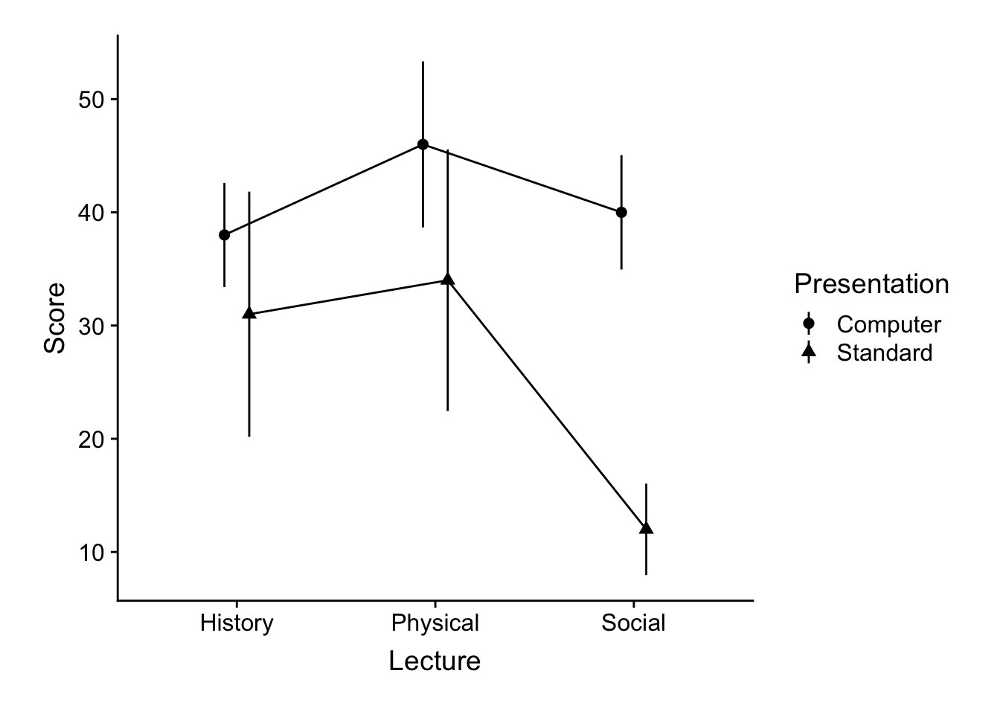
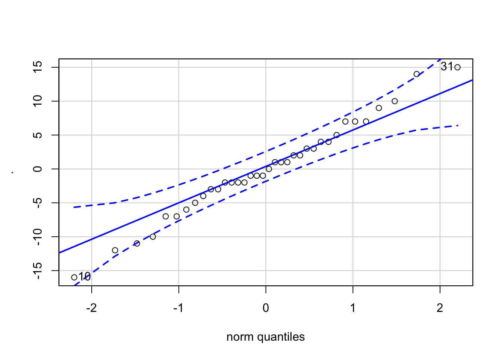

Week 11 ANOVA IV: Interactions & simple Effects
This short vignette is a continuation of last weeks focus on Factorial ANOVA. Here we’re asking the question “what to do if you have an interaction”. As we discussed last week, when running a factorial ANOVA, your first question should be “do I have an interaction”. If you do have an interaction then you need to examine that interaction in detail. How do we do this? Well, let’s think about what that interaction means. As an example, let’s revisit some of the data that we looked at in lecture. This write-up requires the following packages:
pacman::p_load(tidyverse, cowplot, afex, agricolae, Rmisc, psych)11.1 the data set
Background: Given the ease of access for new technologies and increasing enrollment demands, many university are advocating that departments switch over to E-courses, where students view an online, pre-recorded lecture on the course topic in lieu of sitting in a classroom in a live lecture. Given this push, a critical question remains regarding the impact of E-courses on student outcomes. More it may be the case that certain subject content more readily lends itself to E-course presentations than other subjects. To address this question we tested students performance on a test one week after participating in the related lecture. Lectures were either experienced via online (Computer) or in a live classroom (Standard). In addition, the lecture content varied in topic (Physical science, Social science, History)
Here’s the data, where Score represents performance:
## Parsed with column specification:
## cols(
## Score = col_integer(),
## Presentation = col_character(),
## Lecture = col_character(),
## subID = col_integer()
## )11.2 Plotting the data and descriptive stats
Here’s what our results look like:
ggplot(dataset, mapping = aes(x = Lecture, y = Score, group = Presentation)) + stat_summary(geom = "pointrange",
fun.data = "mean_cl_normal", position = position_dodge(0.25), aes(shape = Presentation)) +
stat_summary(geom = "line", fun.y = "mean", position = position_dodge(0.25)) +
theme_cowplot() + theme(plot.margin = unit(c(0.25, 0.25, 0.25, 0.25), "in"))
And now getting the cell means and marginal means. Remember that analysis of the marginal means is what is tested in the main effects. The test for an interaction focuses on the cell means:
# cell means:
summarySE(data = dataset, measurevar = "Score", groupvars = c("Presentation", "Lecture"))## Presentation Lecture N Score sd se ci
## 1 Computer History 6 38 4.381780 1.788854 4.598397
## 2 Computer Physical 6 46 6.985700 2.851900 7.331042
## 3 Computer Social 6 40 4.816638 1.966384 5.054751
## 4 Standard History 6 31 10.315038 4.211096 10.824968
## 5 Standard Physical 6 34 11.009087 4.494441 11.553328
## 6 Standard Social 6 12 3.847077 1.570563 4.037260# marginal means
summarySE(data = dataset, measurevar = "Score", groupvars = "Lecture")## Lecture N Score sd se ci
## 1 History 12 34.5 8.393721 2.423058 5.333116
## 2 Physical 12 40.0 10.795622 3.116428 6.859211
## 3 Social 12 26.0 15.201675 4.388345 9.658683summarySE(data = dataset, measurevar = "Score", groupvars = "Presentation")## Presentation N Score sd se ci
## 1 Computer 18 41.33333 6.249706 1.473070 3.107906
## 2 Standard 18 25.66667 13.105903 3.089091 6.51741211.3 the Omnibus ANOVA (and assumption tests)
Here we are running the omnibus ANOVA using the afex:aov_ex() function:
omnibus.aov <- afex::aov_ez(id = "subID", dv = "Score", data = dataset, between = c("Lecture",
"Presentation"), within = NULL, type = 3, return = "afex_aov", anova_table = list(es = "pes"))## Converting to factor: Lecture, Presentation## Contrasts set to contr.sum for the following variables: Lecture, PresentationIn addition I’m using the lm attribute of the omnibus.aov output to get the residuals of the model. This in turn allows me to test for normality:
# check the normailty assumption of the residuals:
omnibus.aov$lm$residuals %>% car::qqPlot()
## [1] 10 31Unfortunately, I can’t use this same method to check for heterogeneity of varience using leveneTest(). Going to have to do it the old fashioned way:
# check the heterogeneity assumption
car::leveneTest(Score ~ Lecture * Presentation, data = dataset)## Levene's Test for Homogeneity of Variance (center = median)
## Df F value Pr(>F)
## group 5 1.6132 0.1868
## 30Finally let’s take a look at the omnibus ANOVA results. While I could simple call my omnibus.aov object by itself:
omnibus.aov## Anova Table (Type 3 tests)
##
## Response: Score
## Effect df MSE F pes p.value
## 1 Lecture 2, 30 55.60 10.74 *** .42 .0003
## 2 Presentation 1, 30 55.60 39.73 *** .57 <.0001
## 3 Lecture:Presentation 2, 30 55.60 6.49 ** .30 .005
## ---
## Signif. codes: 0 '***' 0.001 '**' 0.01 '*' 0.05 '+' 0.1 ' ' 1I prefer the output provided by its anova_table attribute. Why? because it allows me to easily extract values from the resulting table. This will be extremely helpful in a little bit:
# show the anova table
omnibus.aov$anova_table## Anova Table (Type 3 tests)
##
## Response: Score
## num Df den Df MSE F pes Pr(>F)
## Lecture 2 30 55.6 10.7374 0.41719 0.000304 ***
## Presentation 1 30 55.6 39.7302 0.56977 5.993e-07 ***
## Lecture:Presentation 2 30 55.6 6.4928 0.30209 0.004539 **
## ---
## Signif. codes: 0 '***' 0.001 '**' 0.01 '*' 0.05 '.' 0.1 ' ' 1Looking at the ANOVA: Our assumptions tests check out, and our ANOVA reveals two main effects and in interaction. Looking back at the plot (always, always plot before you think about doing any sort of follow-ups!!) it is fairly apparent what is happening—when moving from one lecture to the next, we see a much more dramatic decrease in score for the Social group in the Standard presentation group compared to the Computer presentation. That is, moving from left to right the pattern of change is different for the Standard group, compared to the Computer group. This is what our eyeball test is telling us—we need to confirm it with some stats! There are two ways to address this interaction, each involves sub-setting the data for further analysis.
When you have an interaction, you proceed by testing for differences between means for one condition, on each individual level of the other. For example, we can test for and effect of Lecture Type when the Presentation is Computer, and effect of Lecture Type when the Presentation is Standard. In this case you would run two separate simple effects ANOVAs, each taking a look at changes for each line in the plot above.
–OR–
You could check for difference between Presentations on each Lecture type. Here you would be comparing Computer v Standard in each of the Lecture conditions. This would involve running three ANOVAs each checking for the Presentation differences (circle v. triangle) present at History, Physical, and Social.
Which you choose, ultimately depends on which narrative you are trying to convey in your data. Here it may make sense to do the former. That is eyeballing the data it looks like the means in the Computer presentation level are not as different from one another as the Standard presentation.
11.4 Running the simple effects ANOVA in 6 steps:
Running a follow-up simple effects ANOVA is akin to running a One-way ANOVA with one important caveat. When you run the follow-up ANOVA you need to use the error terms from your omnibus ANOVA. That is your simple effects ANOVA calls for the omnibus ANOVA errors: Sum of Squares, Mean Square Error, and denominator degrees of freedom. What this means is that the F-value (and subsequent p-values) that you get in you initial follow-up ANOVA is WRONG.
There are several steps that need to be run for each simple effects ANOVA:
11.4.1 step 1: get the omnibus ANOVA:
Assuming you haven’t already we need to run the omnibus ANOVA. Here I’m running all ANOVAs using afex::aov_ez and saving them as afex_aov objects. This will be useful to me later on when extracting info for my correction calculations:
require(afex)
# need to make a subject column for afex:
dataset$subID <- 1:nrow(dataset)
# run omnibus:
omnibus.aov <- afex::aov_ez(id = "subID", dv = "Score", data = dataset, between = c("Lecture",
"Presentation"), within = NULL, type = 3, return = "afex_aov", anova_table = list(es = "pes"))## Converting to factor: Lecture, Presentation## Contrasts set to contr.sum for the following variables: Lecture, Presentationomnibus.aov$anova_table## Anova Table (Type 3 tests)
##
## Response: Score
## num Df den Df MSE F pes Pr(>F)
## Lecture 2 30 55.6 10.7374 0.41719 0.000304 ***
## Presentation 1 30 55.6 39.7302 0.56977 5.993e-07 ***
## Lecture:Presentation 2 30 55.6 6.4928 0.30209 0.004539 **
## ---
## Signif. codes: 0 '***' 0.001 '**' 0.01 '*' 0.05 '.' 0.1 ' ' 111.4.2 step 2: get the MSError, Error df, and Error SS from omnibus ANOVA
In R, we can do this by using some of the attribues() of the omnibus.aov (afex_aov object).
For example if we take a look at omnibus.aov$anova_table we see that we can get the MSE and den Df from its attributes (we only need one value, so I’m taking the first instance). We can calculate the omnibus Error SS by multiplying the two:
omnibus_mse <- omnibus.aov$anova_table$MSE[1]
omnibus_df <- omnibus.aov$anova_table$"den Df"[1]
omnibus_ss_error <- omnibus_mse * omnibus_df11.4.3 step 3: subset your data accordingly
In order to do this we will need to subset the data. For example I am interested in running my follow-ups on Computer data and Standard data separately, so my first move is to perform this subset:
computer.data <- filter(dataset, Presentation == "Computer")
standard.data <- filter(dataset, Presentation == "Standard")11.4.4 step 4: run your One-way simple effects ANOVA(s)
Here I’m focusing on the computer.data for my example. I’ll return to the standard.data later. Again, I’m testing for an effect of Lecture Type on the computer.data. Note that you only include Lecture in you between = call:
computer.aov <- afex::aov_ez(id = "subID", dv = "Score", data = computer.data, between = "Lecture",
within = NULL, type = 3, return = "afex_aov", anova_table = list(es = "pes"))## Converting to factor: Lecture## Contrasts set to contr.sum for the following variables: Lecturecomputer.aov$anova_table## Anova Table (Type 3 tests)
##
## Response: Score
## num Df den Df MSE F pes Pr(>F)
## Lecture 2 15 30.4 3.4211 0.31325 0.0597 .
## ---
## Signif. codes: 0 '***' 0.001 '**' 0.01 '*' 0.05 '.' 0.1 ' ' 111.4.5 step 5: get the treatment MS, df, SS, and F-value from your simple ANOVA
As before, this can be done by calling attributes from our simple ANOVA, computer.aov, and using what we know about calculating those values that can’t be extracted:
simple_f <- computer.aov$anova_table$F
simple_df <- computer.aov$anova_table$`num Df`
simple_mse <- computer.aov$anova_table$MSE[1]
# we can calculate the treatment MS by:
simple_ms <- simple_mse * simple_f
# and the simple SS:
simple_ss <- simple_ms * simple_df11.4.6 step 6: make our corrections
As I noted above the F-value, p-value, and effect size (pes, \(\eta_p^2\)) that you originally obtained in the simple effects computer.aov are not correct. We need to make the appropriate corrections. This can be done my hand, using the values we’ve extracted and calculated above:
# calculate F using simple treatment MS and omnibus MSE
corrected_f <- simple_ms/omnibus_mse
# the pf function calculates the cummulative p.value using the corrected_f and
# appropriate degrees of freedom. Since its cumulative we subtract this result
# from 1:
corrected_p <- (1 - pf(corrected_f, df1 = simple_df, df2 = omnibus_df))
# calculate the pes by using simple treatment SS and omnibus MSE:
corrected_pes <- (simple_ss/(simple_ss + omnibus_ss_error))Congrats!! You have made the appropriate corrections! Taking a look at your corrected result it appears that we should accept the null hypothesis of no difference in means on the computer data.
11.5 Building a function to ninja this for us
Given what we know about how we made these calculations we can create a function in R to simplify this process. All we need an omnibus afex_aov object and simple afex_aov object to extract from. Given that, we can set up the function by copying the hand calculations from the previous steps. Here I’m building the function simpleEffectsAOV to handle this for us. Feel free to use this function BUT make sure you understand what is happening in each line:
simpleEffectsAOV <- function(full.aov, simple.aov) {
# get important values from full:
full_mse <- full.aov$anova_table$MSE[1]
full_df <- full.aov$anova_table$"den Df"[1]
full_ss_error <- full_mse * full_df
# get important values from simple effects aov
simple_f <- simple.aov$anova_table$F
simple_df <- simple.aov$anova_table$`num Df`
simple_mse <- simple.aov$anova_table$MSE[1]
simple_ms <- simple_mse * simple_f
simple_ss <- simple_ms * simple_df
# get corrected F
corrected_f <- simple_ms/full_mse
# get corrected P
p.value <- (1 - pf(corrected_f, df1 = simple_df, df2 = full_df))
# round p.value to 3 digits
p.value <- round(p.value, 3)
# if the p-value is greater than .001, then report entire value else, report as
# 'p < .001'
p.value <- ifelse(p.value > 0.001, paste0("p = ", p.value), "p < .001")
# get simple effects pes:
pes <- (simple_ss/(simple_ss + full_ss_error))
# print our results: I'm using the paste function to write my results as a string
ftest <- paste0("F(", simple_df, ",", full_df, ") = ", round(corrected_f, digits = 3),
", ", p.value, ", pes=", round(pes, 3))
# round our obtained full_mse to 3 digits:
full_mse <- round(full_mse, digits = 3)
output <- cbind(row.names(simple.aov[[1]]), full_mse, ftest)
dimnames(output)[[2]][1] <- "Effect"
show(output)
}Note that a copy of this function is available on my github cite to download and can be sourced by you using the following:
source("https://raw.githubusercontent.com/tehrandavis/statsRepo/master/statsScripts/simpleEffectsAOV.R")And now I can use this function like so:
simpleEffectsAOV(full.aov = omnibus.aov, simple.aov = computer.aov)## Effect full_mse ftest
## [1,] "Lecture" "55.6" "F(2,30) = 1.871, p = 0.172, pes=0.111"And now quickly let’s run the Standard data:
standard.aov <- afex::aov_ez(id = "subID", dv = "Score", data = standard.data, between = "Lecture",
within = NULL, type = 3, return = "afex_aov", anova_table = list(es = "pes"))## Converting to factor: Lecture## Contrasts set to contr.sum for the following variables: LecturesimpleEffectsAOV(full.aov = omnibus.aov, simple.aov = standard.aov)## Effect full_mse ftest
## [1,] "Lecture" "55.6" "F(2,30) = 15.36, p < .001, pes=0.506"11.6 Post hoc tests
So it looks like we have no Lecture type effect on our computer data, but we do have one on our standard data. Given our results, we need to run further tests on our standard.data results to tease out the differences between lecture types. Here we can call on our old friend Tukey HSD, but again with the same caveat. Our calculations (in this case of the critical q (see Howell text) must include the error terms from the omnibus ANOVA. In order to do so we can still use the agricolae::HSD.test function, but where before we simply used the lm object as one of our arguments, no we need to enter our appropriate MSE and df by hand. Here is a comparison of the WRONG way and the RIGHT way to perform this follow-up. Note the differences in the Critical Value of Studentized Range for each output:
### THIS IS WRONG !!!!! ###
agricolae::HSD.test(standard.aov$lm, trt = "Lecture", console = T, group = F)##
## Study: standard.aov$lm ~ "Lecture"
##
## HSD Test for dv
##
## Mean Square Error: 80.8
##
## Lecture, means
##
## dv std r Min Max
## History 31 10.315038 6 20 46
## Physical 34 11.009087 6 18 48
## Social 12 3.847077 6 6 16
##
## Alpha: 0.05 ; DF Error: 15
## Critical Value of Studentized Range: 3.673378
##
## Comparison between treatments means
##
## difference pvalue signif. LCL UCL
## History - Physical -3 0.8337 -16.480178 10.48018
## History - Social 19 0.0062 ** 5.519822 32.48018
## Physical - Social 22 0.0019 ** 8.519822 35.48018### THIS IS RIGHT !!!! ####
agricolae::HSD.test(standard.data$Score, trt = standard.data$Lecture, DFerror = 30,
MSerror = 55.6, alpha = 0.05, console = T, group = F)##
## Study: standard.data$Score ~ standard.data$Lecture
##
## HSD Test for standard.data$Score
##
## Mean Square Error: 55.6
##
## standard.data$Lecture, means
##
## standard.data.Score std r Min Max
## History 31 10.315038 6 20 46
## Physical 34 11.009087 6 18 48
## Social 12 3.847077 6 6 16
##
## Alpha: 0.05 ; DF Error: 30
## Critical Value of Studentized Range: 3.48642
##
## Comparison between treatments means
##
## difference pvalue signif. LCL UCL
## History - Physical -3 0.7671 -13.613081 7.613081
## History - Social 19 0.0003 *** 8.386919 29.613081
## Physical - Social 22 0.0000 *** 11.386919 32.613081Given our latter result above we see that in the Standard presentation, scores based on Social lectures were significantly less than the other two.
11.7 Interpreting these results:
Given everything above, there are several things that this data are telling us:
- Main effect for computer: on average people tended to perform better in the Computer presentation
- Main effect for Lecture: this main effect is not as clear. Overall, people may have performed worst on the
Sociallecture content, it’s quite apparent that the presence of this effect is muddled by presentation type. This is what the presence of our interaction is telling us. - Simple effect of lecture type via computer: No differences in means suggests that people perform equally well on all lecture content types when administed via computer
- Simple effect of lecture type via standard lecture: significant simple effect and subsequent posthocs demonstrate that while students perform equallly as well on Physical Science and History content via standard lectures, they perform worse on tests of Social science content.
Given this pattern of results two major conclusions become apparent:
- First, students overall perform better via Computer. This was the case for all three lecture types. True, how much better varies by condition, but in all cases scores were higher.
- Second, while performance via Computer was indifferent to Lecture type (all lecture content scores were nearly equal) there was an attrition for Social science content when provided via standard lecture.
From this one might conclude that administering content via E-course is better for student outcomes, especially if the subject content is in the Social Sciences!
11.8 Example write-up:
To test for the effects of Presentation style (Standard, Computer) and Lecture Type (Physics, History, Social) we ran a 2 × 3 factorial ANOVA. This ANOVA revealed main effects for both Presentation style, \(F(1,30)=39.73, p<.001, \eta_p^2=.57\), and Lecture type, \(F(2,30)=10.74, p<.001, \eta_p^2=.42\).
As shown in Figure 1, these effects we qualified by a Presentation style × Lecture type interaction, \(F(2,30)=6.49, p=.005, \eta_p^2=.30\). Differences in Lecture type were only observed when material was presented in the Standard presentation, \(F(2,30)=15.36, p<.001, \eta_p^2=.51\), where scores from the Social lecture were significantly different from the remaining two (Tukey HSD, p< .05). No differeces were observed when the material was presented via computer (p>.05). Overall, participants perdormed better when the material was presented via computer (M±SD: 41.33 ± 6.25) compared to standard presentations (25.67 ± 13.11).
One thing you may notice is that I still stressed the main effect. This is to stress to the reader that presentation type did make a difference.
11.9 Performing this in SPSS (video)
As I mentioned in class, given that we are doing our analyses via programming, we have the luxury of creating a function that can make all of our simple effects adjustments for us. Once created (and saved for later) , this function can be used over and over again. If you are using the GUI method in SPSS, you don’t have this luxury (although you can certainly create a similar function in SPSS!). Fear not, here I walk you through how to do this in SPSS, assuming you have Microsoft Excel: